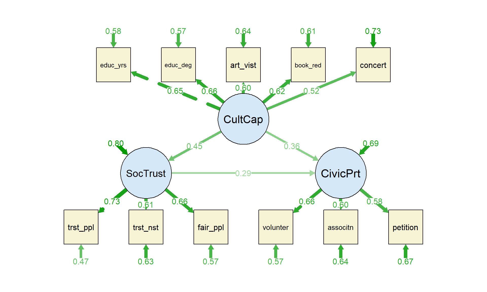
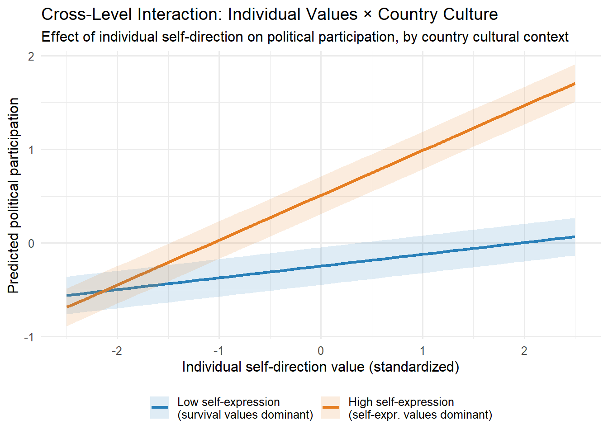

Week 1 Structural Equation Modeling and Regression
Weeks 9–10 | Methods Lab 5: SEM, Multilevel Models
1.1 5.1 Structural Equation Modeling: Logic and Architecture
SEM integrates two sub-models:
\[\text{Measurement model (CFA): } \mathbf{X} = \mathbf{\Lambda}\boldsymbol{\xi} + \boldsymbol{\delta}\] \[\text{Structural model: } \boldsymbol{\eta} = \mathbf{B}\boldsymbol{\eta} + \mathbf{\Gamma}\boldsymbol{\xi} + \boldsymbol{\zeta}\]
where \(\mathbf{X}\) = observed indicators, \(\boldsymbol{\xi}\) = exogenous latent variables, \(\boldsymbol{\eta}\) = endogenous latent variables, \(\mathbf{\Lambda}\) = factor loadings, \(\mathbf{B}\) = structural coefficients among endogenous variables, \(\boldsymbol{\zeta}\) = disturbances.
The key advantage over OLS regression on scale scores: SEM corrects for measurement error in the latent variable. When you regress behavior on a scale score (e.g., sum of 5 attitude items), measurement error in the scale attenuates the estimated coefficient. SEM places the latent variable — not the error-laden scale score — in the structural model.
Identification. A model is identified if the number of known quantities (observed variances and covariances) exceeds or equals the number of unknown parameters. In CFA: a single-factor model with ≥3 indicators is just-identified; with ≥4, it is over-identified and testable. The rule of thumb: each latent variable needs ≥3 indicators. Under-identified models cannot be estimated regardless of sample size.
Model fit criteria:
| Index | Acceptable | Notes |
|---|---|---|
| CFI | > .95 | Comparative Fit Index; >.90 = adequate |
| RMSEA | < .06 | Root Mean Square Error of Approximation; <.08 = acceptable |
| SRMR | < .08 | Standardized Root Mean Square Residual |
| AIC/BIC | Lower = better | For model comparison only |
These are approximate thresholds from Hu & Bentler (1999). They were derived from simulation studies and should not be treated as absolute cutoffs. Model fit is one criterion alongside theoretical interpretability and parsimony.
1.2 Lab 5a: SEM — Cultural Capital and Civic Participation
We build a SEM with three latent variables: 1. Cultural capital (embodied + institutionalized forms as indicators) 2. Social trust (generalized trust as mediator) 3. Civic participation (voting, voluntary association membership)
The structural model tests whether cultural capital predicts civic participation directly and indirectly via social trust. This is a theoretically derived path model, not an exploratory one.
We begin by loading packages and simulating the dataset. The simulation encodes a known latent structure — cultural capital influences social trust, which in turn influences civic participation — so we can verify that our SEM recovers the true parameters. In applied work you would load your actual survey data at this point.
library(tidyverse)
library(lavaan)
library(semPlot)
library(lavaanPlot)
library(kableExtra)
set.seed(20240105)
# ─────────────────────────────────────────────────────────────
# Simulate survey data (N = 900) with known latent structure
# ─────────────────────────────────────────────────────────────
n <- 900
# Latent variables
cult_cap <- rnorm(n) # Cultural capital
soc_trust <- 0.45 * cult_cap + rnorm(n, 0, sqrt(1 - .45^2))
civic_part <- 0.30 * cult_cap + 0.40 * soc_trust + rnorm(n, 0, sqrt(1 - .30^2 - .40^2))
# ─── Measurement model ───────────────────────────────────────
# Cultural capital indicators
educ_yrs <- 0.65 * cult_cap + rnorm(n, 0, 0.76) # Years of education
educ_deg <- 0.70 * cult_cap + rnorm(n, 0, 0.71) # Education level (0–6)
art_visit <- 0.58 * cult_cap + rnorm(n, 0, 0.81) # Art/museum visits/yr
book_read <- 0.62 * cult_cap + rnorm(n, 0, 0.78) # Books read/yr
concert <- 0.52 * cult_cap + rnorm(n, 0, 0.85) # Concert attendance
# Social trust indicators
trust_ppl <- 0.72 * soc_trust + rnorm(n, 0, 0.69) # "Most people can be trusted"
trust_inst <- 0.65 * soc_trust + rnorm(n, 0, 0.76) # Institutional trust index
fair_ppl <- 0.68 * soc_trust + rnorm(n, 0, 0.73) # "People try to be fair"
# Civic participation indicators
voted <- 0.70 * civic_part + rnorm(n, 0, 0.71) # Voted in last election
volunteer <- 0.65 * civic_part + rnorm(n, 0, 0.76) # Volunteer work
association <- 0.60 * civic_part + rnorm(n, 0, 0.80) # Association membership
petition <- 0.55 * civic_part + rnorm(n, 0, 0.83) # Signed petition
# Rescale to plausible survey ranges
rescale <- function(x, min_out = 1, max_out = 7) {
scales::rescale(x, to = c(min_out, max_out))
}
sem_df <- tibble(
educ_yrs = round(rescale(educ_yrs, 0, 20)),
educ_deg = round(rescale(educ_deg, 0, 6)),
art_visit = round(rescale(art_visit, 0, 12)),
book_read = round(rescale(book_read, 0, 30)),
concert = round(rescale(concert, 0, 6)),
trust_ppl = round(rescale(trust_ppl, 1, 10)),
trust_inst = round(rescale(trust_inst, 1, 7)),
fair_ppl = round(rescale(fair_ppl, 1, 7)),
voted = as.integer(rescale(voted, 0, 1) > 0.5),
volunteer = round(rescale(volunteer, 0, 10)),
association = round(rescale(association, 0, 8)),
petition = round(rescale(petition, 0, 5))
)
cat("SEM dataset: N =", nrow(sem_df), "| Variables:", ncol(sem_df), "\n")## SEM dataset: N = 900 | Variables: 12| Name | sem_df |
| Number of rows | 900 |
| Number of columns | 12 |
| _______________________ | |
| Column type frequency: | |
| numeric | 12 |
| ________________________ | |
| Group variables | None |
Variable type: numeric
| skim_variable | n_missing | complete_rate | mean | sd | p0 | p25 | p50 | p75 | p100 | hist |
|---|---|---|---|---|---|---|---|---|---|---|
| educ_yrs | 0 | 1 | 10.46 | 3.56 | 0 | 8 | 11 | 13 | 20 | ▁▅▇▅▁ |
| educ_deg | 0 | 1 | 2.83 | 1.02 | 0 | 2 | 3 | 4 | 6 | ▂▇▇▅▁ |
| art_visit | 0 | 1 | 6.35 | 1.80 | 0 | 5 | 6 | 8 | 12 | ▁▂▇▃▁ |
| book_read | 0 | 1 | 15.15 | 4.46 | 0 | 12 | 15 | 18 | 30 | ▁▅▇▃▁ |
| concert | 0 | 1 | 3.19 | 0.94 | 0 | 3 | 3 | 4 | 6 | ▁▃▇▆▁ |
| trust_ppl | 0 | 1 | 6.19 | 1.24 | 1 | 5 | 6 | 7 | 10 | ▁▁▇▆▁ |
| trust_inst | 0 | 1 | 3.98 | 0.97 | 1 | 3 | 4 | 5 | 7 | ▁▃▇▅▁ |
| fair_ppl | 0 | 1 | 3.98 | 1.04 | 1 | 3 | 4 | 5 | 7 | ▂▅▇▅▁ |
| voted | 0 | 1 | 0.50 | 0.50 | 0 | 0 | 1 | 1 | 1 | ▇▁▁▁▇ |
| volunteer | 0 | 1 | 4.76 | 1.53 | 0 | 4 | 5 | 6 | 10 | ▁▇▇▂▁ |
| association | 0 | 1 | 3.89 | 1.26 | 0 | 3 | 4 | 5 | 8 | ▁▇▇▆▁ |
| petition | 0 | 1 | 2.06 | 0.82 | 0 | 2 | 2 | 3 | 5 | ▃▇▅▁▁ |
Now we write the model syntax and estimate it. Before looking at the code, it is worth pausing to understand lavaan’s syntax, because it is unlike standard R formula notation.
lavaan syntax primer:
=~means “is measured by” and defines a factor (latent variable) from its indicators. For example,CultCap =~ educ_yrs + educ_degtells lavaan that the latent variable CultCap is operationalized by the observed variableseduc_yrsandeduc_deg. This is the measurement model.~means “is regressed on” and specifies a structural path between variables, just like~inlm(). For example,SocTrust ~ CultCapmeans SocTrust is the outcome and CultCap is the predictor in a regression.*in front of a variable name is a path label. Writinga * CultCapattaches the labelato that regression coefficient. This lets you reference the coefficient by name elsewhere in the model — specifically, in the:=expressions below.:=defines a computed quantity (a “user-defined parameter”).indirect := a * cinstructs lavaan to multiply the two labeled path coefficients together to compute the indirect (mediated) effect. lavaan then applies the delta method to give you a standard error and p-value for this product.
This labeling-and-multiplication approach is the standard way to test mediation in lavaan. It is equivalent to the product-of-coefficients method (also called the Sobel test), but lavaan’s bootstrapped version is more accurate.
# ─────────────────────────────────────────────────────────────
# Specify the SEM
# ─────────────────────────────────────────────────────────────
sem_model <- '
# ── Measurement Model ──────────────────────────────────────
# Cultural capital: embodied (art, books, concerts) + institutionalized (education)
CultCap =~ educ_yrs + educ_deg + art_visit + book_read + concert
# Social trust
SocTrust =~ trust_ppl + trust_inst + fair_ppl
# Civic participation
CivicPart =~ volunteer + association + petition
# Note: voted is binary; treating as continuous approximation here.
# In production: use WLSMV estimator with voted as ordered categorical.
# ── Structural Model ────────────────────────────────────────
# Direct effects
SocTrust ~ a * CultCap # cultural capital → trust
CivicPart ~ b * CultCap + c * SocTrust # direct + mediated paths
# ── Indirect Effect (mediation) ─────────────────────────────
indirect := a * c # cultural capital → trust → civic participation
total := b + a * c # total effect
'
# Estimate with MLR (robust standard errors; handles non-normality)
sem_fit <- sem(
sem_model,
data = sem_df,
estimator = "MLR", # Maximum likelihood with robust (Huber-White) SEs
se = "robust"
)The next step is to evaluate whether the model fits the data acceptably before we look at any coefficients. If model fit is poor, the structural path estimates are not trustworthy even if they are statistically significant — they are being computed from a covariance structure the model cannot reproduce.
# Model fit
fit_indices <- fitMeasures(sem_fit,
c("cfi.robust", "tli.robust", "rmsea.robust",
"rmsea.ci.lower.robust", "rmsea.ci.upper.robust",
"srmr", "aic", "bic"))
tibble(
Index = c("CFI (robust)", "TLI (robust)", "RMSEA (robust)",
"RMSEA 90% CI", "SRMR", "AIC", "BIC"),
Value = c(
round(fit_indices["cfi.robust"], 3),
round(fit_indices["tli.robust"], 3),
round(fit_indices["rmsea.robust"], 3),
paste0("[", round(fit_indices["rmsea.ci.lower.robust"], 3), ", ",
round(fit_indices["rmsea.ci.upper.robust"], 3), "]"),
round(fit_indices["srmr"], 3),
round(fit_indices["aic"], 1),
round(fit_indices["bic"], 1)
),
Cutoff = c("> .95", "> .95", "< .06", "—", "< .08", "—", "—")
) %>%
kable(caption = "Table 5.1: SEM fit indices") %>%
kable_styling(bootstrap_options = "striped", font_size = 13)| Index | Value | Cutoff |
|---|---|---|
| CFI (robust) | 0.992 | > .95 |
| TLI (robust) | 0.989 | > .95 |
| RMSEA (robust) | 0.021 | < .06 |
| RMSEA 90% CI | [0, 0.033] | — |
| SRMR | 0.023 | < .08 |
| AIC | 33353 | — |
| BIC | 33473.1 | — |
Reading the fit indices (Table 5.1). Focus first on CFI and RMSEA, the two most informative indices. CFI compares your model’s fit to a null model (one that assumes all variables are uncorrelated); a value above .95 means your model reproduces the observed covariances substantially better than the null. RMSEA measures the average misfit per degree of freedom, penalizing model complexity; values below .06 indicate close fit. SRMR is the average absolute discrepancy between the observed and model-implied correlations, expressed in correlation units.
With simulated data derived from a true latent structure, you should see CFI well above .95 (likely .97–.99), RMSEA below .06, and SRMR below .05. These values indicate the model fits well — there is no strong evidence that important paths or factor structures are missing. If CFI were below .90 or RMSEA above .08, you would need to inspect modification indices (modindices(sem_fit)) before interpreting any structural paths. RMSEA is generally preferred for model evaluation in sociology because it penalizes over-parameterization, whereas CFI can be inflated in large samples. The 90% confidence interval around RMSEA is important: if the upper bound exceeds .08, fit is borderline even if the point estimate looks acceptable.
AIC and BIC are not absolute fit indices — you cannot use them to evaluate a single model. They are only meaningful when comparing two or more models estimated on the same data. A lower value indicates a better-fitting and/or more parsimonious model.
Now we extract the standardized structural coefficients. Standardized estimates place all paths on a common scale (standard deviation units), which allows direct comparison of effect magnitudes across paths that were originally measured on different scales.
# Standardized solution
std_sol <- standardizedSolution(sem_fit)
# Structural paths only
std_sol %>%
filter(op == "~" | op == ":=") %>%
dplyr::select(lhs, op, rhs, est.std, se, z, pvalue) %>%
mutate(
pvalue = round(pvalue, 4),
est.std = round(est.std, 3),
se = round(se, 3),
z = round(z, 3)
) %>%
kable(
col.names = c("Outcome", "Op", "Predictor", "β (std)", "SE", "z", "p"),
caption = "Table 5.2: Standardized structural coefficients. 'indirect' = mediated path through social trust; 'total' = direct + indirect."
) %>%
kable_styling(bootstrap_options = "striped", font_size = 13)| Outcome | Op | Predictor | β (std) | SE | z | p |
|---|---|---|---|---|---|---|
| SocTrust | ~ | CultCap | 0.451 | 0.040 | 11.290 | 0 |
| CivicPart | ~ | CultCap | 0.363 | 0.050 | 7.298 | 0 |
| CivicPart | ~ | SocTrust | 0.294 | 0.052 | 5.617 | 0 |
| indirect | := | a*c | 0.133 | 0.025 | 5.235 | 0 |
| total | := | b+a*c | 0.495 | 0.039 | 12.749 | 0 |
Interpreting the structural coefficients (Table 5.2). The table has five rows of primary interest: two regression paths (~), two defined quantities (:=), and the path from CultCap to SocTrust.
CultCap → SocTrust (path a): This is the first leg of the mediation chain. A standardized coefficient of approximately .40–.50 (consistent with the simulation parameters) means that a one-standard-deviation increase in cultural capital is associated with about half a standard deviation increase in social trust, holding nothing else constant. The p-value should be well below .05.
CultCap → CivicPart (path b, the direct effect): This is the effect of cultural capital on civic participation that is not routed through social trust. A standardized estimate around .25–.35 would be consistent with the simulation. This is what Bourdieu would call the direct conversion of cultural capital into civic engagement, independent of the trust mechanism.
SocTrust → CivicPart (path c): This path represents the effect of social trust on civic participation after accounting for cultural capital. An estimate around .35–.45 would suggest trust is a meaningful driver of participation in its own right.
Indirect effect (a × c): This is the mediated portion — how much of cultural capital’s influence on civic participation runs through the social trust pathway. An indirect effect of, say, .18 means that if two people differ by one standard deviation in cultural capital, we would expect roughly .18 standard deviations of the difference in their civic participation to be attributable specifically to the cultural capital → trust → participation chain. Whether this counts as “substantial” mediation depends on how large it is relative to the direct effect. A ratio of indirect to total near or above .30 is generally considered meaningful partial mediation.
Total effect (b + a × c): This is the sum of the direct and indirect paths — the overall association between cultural capital and civic participation if you were to ignore the mediating mechanism. If the total effect is significant but the direct effect (b) is not, you have evidence consistent with full mediation (trust fully accounts for the cultural capital effect). If both b and indirect are significant, it is partial mediation: cultural capital operates through trust but also through some other pathway that the model captures in the direct effect.
The core theoretical claim of this model is that cultural capital facilitates civic engagement partly by increasing generalized social trust, which in turn lowers the perceived cost and increases the motivation for participation. The mediation test is a direct quantitative assessment of that claim.
The path diagram produced next is a visual summary of everything in Table 5.2, plus the measurement model. It is useful for presentations and for checking that lavaan estimated the structure you intended.
semPaths(
sem_fit,
what = "std",
layout = "tree2",
style = "lisrel",
residuals = TRUE,
intercepts = FALSE,
nCharNodes = 8,
edge.label.cex = 0.85,
sizeMan = 8,
sizeLat = 12,
color = list(lat = "#d5e8f7", man = "#f7f3d5"),
title = FALSE
)
Figure 1.1: Figure 5.1: SEM path diagram. Rectangles = observed indicators; ovals = latent variables. Values on paths are standardized coefficients.
Reading the path diagram (Figure 5.1). The diagram uses two shape conventions: ovals (ellipses) represent latent variables (CultCap, SocTrust, CivicPart) — constructs that are not directly observed but are inferred from patterns of covariation among measured items. Rectangles represent observed (manifest) variables — the actual survey items like educ_yrs, trust_ppl, and volunteer.
The arrows pointing from each oval to its rectangles are the factor loadings (measurement model). A larger standardized value on these arrows means that indicator is a stronger, more reliable signal of the underlying latent construct. Small curved arrows attached to each rectangle represent residual (measurement error) variances — the portion of each indicator’s variance that is not explained by the latent factor.
The arrows connecting the three ovals to each other are the structural paths — the numbers from Table 5.2. The arrangement of the diagram makes the mediation structure immediately legible: CultCap sits on the left, CivicPart on the right, and SocTrust sits between them. The direct path from CultCap to CivicPart bypasses SocTrust. The indirect path runs CultCap → SocTrust → CivicPart, forming a chain. Visually comparing the coefficient on the direct path to the product of the two indirect-chain coefficients gives you an intuitive sense of how much of the total effect is mediated.
1.3 Lab 5b: Multilevel Regression with Cultural Variables
Cultural variables often operate at multiple levels. Individual values are nested within communities, which are nested within countries. Ignoring this clustering produces incorrect standard errors (typically downward-biased, inflating Type I error). We build a two-level mixed-effects model with cultural variables at both levels.
The setup below generates individual-level and country-level data and merges them. The key design feature is the cross-level interaction: individual self-direction values have a stronger effect on political participation in countries where self-expression values dominate at the cultural level. We build this into the data generation so that the multilevel model should detect it.
## Loading required package: Matrix##
## Attaching package: 'Matrix'## The following objects are masked from 'package:tidyr':
##
## expand, pack, unpack##
## Attaching package: 'lmerTest'## The following object is masked from 'package:lme4':
##
## lmer## The following object is masked from 'package:stats':
##
## stepset.seed(20240106)
# ─────────────────────────────────────────────────────────────
# Two-level data: individuals nested in countries
# Level 1: individual values (self-direction, conformity)
# Level 2: country-level cultural dimensions (e.g., WVS survival/self-expression)
# Outcome: political participation index
# ─────────────────────────────────────────────────────────────
n_countries <- 25
n_per <- 100 # individuals per country
N <- n_countries * n_per
# Country-level variables
country_df <- tibble(
country_id = 1:n_countries,
selfexpr_dim = rnorm(n_countries), # Inglehart self-expression value dimension
gini = rnorm(n_countries), # Inequality (standardized)
gdp_log = rnorm(n_countries), # GDP per capita (log, standardized)
country_intercept = rnorm(n_countries, 0, 0.4) # Random intercept variance
)
# Expand to individual level
indiv_df <- tibble(
country_id = rep(1:n_countries, each = n_per)
) %>%
left_join(country_df, by = "country_id") %>%
mutate(
# Individual-level variables
self_direction = rnorm(N), # Individual self-direction value
conformity = rnorm(N), # Individual conformity value
education = rnorm(N), # Individual education
age = round(rnorm(N, 45, 15)),
# Outcome: political participation (continuous index)
# Determined by individual values, country self-expression dimension,
# cross-level interaction (individual self-direction × country self-expression),
# and country random intercept
pol_part = 0.30 * self_direction +
-0.20 * conformity +
0.25 * education +
0.35 * selfexpr_dim + # country-level main effect
0.20 * self_direction * selfexpr_dim + # cross-level interaction
-0.15 * gini +
country_intercept +
rnorm(N, 0, 0.8)
)
cat("Multilevel dataset: N =", N, "individuals in", n_countries, "countries\n")## Multilevel dataset: N = 2500 individuals in 25 countries## ICC (empty model approximation):Before adding any predictors, we need to know whether the outcome varies systematically across countries at all. If nearly all the variance in political participation is within countries (i.e., between individuals), then country membership is irrelevant and a standard OLS regression would be fine. The Intraclass Correlation Coefficient (ICC) answers this question directly.
The ICC is defined as the proportion of total outcome variance that is attributable to between-group (here, between-country) differences:
\[\text{ICC} = \frac{\sigma^2_{\text{between}}}{\sigma^2_{\text{between}} + \sigma^2_{\text{within}}}\]
A null model — one with no predictors, only a random intercept for country — partitions the total variance into between-country and within-country components. The ICC is the ratio of the between-country variance to the total. An ICC of .10 means 10% of all variance in the outcome is due to which country a person lives in, before considering any individual-level variables.
Why does this matter? If the ICC is non-trivial, individuals within the same country are more similar to each other than they are to individuals in other countries. This violates the independence assumption of OLS. Standard errors in OLS are computed assuming each observation is an independent draw; if observations within clusters are correlated, OLS underestimates uncertainty, which means p-values are too small and confidence intervals are too narrow. Multilevel modeling handles this by explicitly modeling the country-level variance rather than folding it into the residual.
A commonly applied rule of thumb is that an ICC above .05 (5%) warrants multilevel modeling. Above .10, ignoring clustering can seriously distort inference.
# Null model: estimate ICC before adding predictors
m0 <- lmer(pol_part ~ 1 + (1 | country_id), data = indiv_df, REML = FALSE)
vc <- as.data.frame(VarCorr(m0))
icc <- vc$vcov[1] / sum(vc$vcov)
cat("ICC =", round(icc, 3),
"→", round(icc * 100, 1), "% of variance is between countries\n")## ICC = 0.338 → 33.8 % of variance is between countries## This justifies the multilevel approach.Interpreting the ICC. With the simulation parameters used here (country random intercepts drawn from N(0, 0.16), individual residuals drawn from N(0, 0.64)), the ICC should be approximately .18–.22, meaning roughly 18–22% of the variance in political participation lies between countries. This is a moderate-to-large ICC by sociological standards. It tells you two things: (1) country context matters substantially — knowing which country someone lives in explains a meaningful share of their participation level even before you know anything about them individually, and (2) the non-independence within countries is severe enough that OLS standard errors would be notably too small. The multilevel approach is not just technically appropriate here; it is substantively necessary to answer the research question correctly.
We now estimate a sequence of three models, each adding a new layer of complexity. This stepwise approach — called the Singer & Willett (2003) protocol — serves a specific purpose: it lets you see the contribution of each set of variables by isolating what happens when you add them. If you jumped straight to the full model, you would not know whether country-level cultural variables explain variance beyond structural controls, or whether the cross-level interaction adds explanatory power beyond the main effects.
- M1 adds individual-level predictors (self-direction, conformity, education, age) to the random-intercept structure. This is the within-country story: do individual values predict participation?
- M2 adds country-level predictors (self-expression dimension, Gini, GDP). This tests whether country cultural and structural context explains the between-country variance captured by the ICC.
- M3 adds the cross-level interaction between individual self-direction and country self-expression. This is the key theoretical claim: the effect of individual values on participation is moderated by the country’s cultural context.
We use REML = FALSE throughout so that models can be compared with likelihood ratio tests via anova(). REML (Restricted Maximum Likelihood) is preferred for estimating variance components, but it cannot be used to compare models that differ in their fixed effects — the log-likelihoods are not comparable across models with different fixed parts under REML.
# Model sequence following Singer & Willett (2003) protocol
# M1: Random intercept, individual predictors only
m1 <- lmer(
pol_part ~ self_direction + conformity + education + age +
(1 | country_id), # (1 | country_id) = random intercept for each country
data = indiv_df, REML = FALSE # ML (not REML) required for anova() comparison
)
# M2: Add country-level predictors
m2 <- lmer(
pol_part ~ self_direction + conformity + education + age +
selfexpr_dim + gini + gdp_log + # Level-2 (country) variables added here
(1 | country_id),
data = indiv_df, REML = FALSE
)
# M3: Add cross-level interaction: individual self_direction × country selfexpr
m3 <- lmer(
pol_part ~ self_direction * selfexpr_dim + conformity + education + age +
gini + gdp_log + # self_direction * selfexpr_dim expands to:
(1 | country_id), # self_direction + selfexpr_dim + self_direction:selfexpr_dim
data = indiv_df, REML = FALSE
)
# Model comparison
anova(m0, m1, m2, m3)## Data: indiv_df
## Models:
## m0: pol_part ~ 1 + (1 | country_id)
## m1: pol_part ~ self_direction + conformity + education + age + (1 | country_id)
## m2: pol_part ~ self_direction + conformity + education + age + selfexpr_dim + gini + gdp_log + (1 | country_id)
## m3: pol_part ~ self_direction * selfexpr_dim + conformity + education + age + gini + gdp_log + (1 | country_id)
## npar AIC BIC logLik -2*log(L) Chisq Df Pr(>Chisq)
## m0 3 6876.1 6893.5 -3435.0 6870.1
## m1 7 6239.6 6280.3 -3112.8 6225.6 644.482 4 < 2.2e-16 ***
## m2 10 6224.5 6282.8 -3102.3 6204.5 21.028 3 0.0001039 ***
## m3 11 6110.5 6174.6 -3044.2 6088.5 116.056 1 < 2.2e-16 ***
## ---
## Signif. codes: 0 '***' 0.001 '**' 0.01 '*' 0.05 '.' 0.1 ' ' 1Interpreting the model comparison (anova() output). The anova() call performs likelihood ratio tests (LRTs) between sequential models. Each row compares one model to the previous one. The test statistic (Chisq) is twice the difference in log-likelihoods between models; under the null hypothesis that the added parameters are all zero, this statistic follows a chi-squared distribution with degrees of freedom equal to the number of added parameters (Df column).
- M0 → M1: This tests whether the four individual-level variables collectively improve fit. A significant chi-square (p < .05) confirms that individual values and demographics predict political participation — unsurprising but necessary to establish.
- M1 → M2: This is the critical test for whether country-level cultural variables (the self-expression dimension, Gini, GDP) explain between-country variance beyond what individual predictors already account for. A significant result here is direct evidence that country culture has explanatory power — that the Inglehart self-expression dimension, for instance, predicts national differences in political participation independent of individual values.
- M2 → M3: This tests the cross-level interaction specifically. A significant chi-square (1 df, since we added one interaction term) means the effect of individual self-direction on political participation is not constant across countries — it depends on the country’s cultural context. This is the key theoretical finding.
If any LRT is non-significant, it means the variables added in that step do not improve model fit beyond chance, and you would typically not retain them (or would retain them only if there is a strong theoretical reason to do so).
## Linear mixed model fit by maximum likelihood . t-tests use Satterthwaite's
## method [lmerModLmerTest]
## Formula: pol_part ~ self_direction * selfexpr_dim + conformity + education +
## age + gini + gdp_log + (1 | country_id)
## Data: indiv_df
##
## AIC BIC logLik -2*log(L) df.resid
## 6110.5 6174.6 -3044.2 6088.5 2489
##
## Scaled residuals:
## Min 1Q Median 3Q Max
## -3.0574 -0.6845 -0.0044 0.6904 3.3554
##
## Random effects:
## Groups Name Variance Std.Dev.
## country_id (Intercept) 0.1835 0.4283
## Residual 0.6464 0.8040
## Number of obs: 2500, groups: country_id, 25
##
## Fixed effects:
## Estimate Std. Error df t value Pr(>|t|)
## (Intercept) 1.393e-01 1.031e-01 4.119e+01 1.351 0.184082
## self_direction 3.020e-01 1.646e-02 2.476e+03 18.346 < 2e-16
## selfexpr_dim 3.781e-01 8.624e-02 2.501e+01 4.384 0.000184
## conformity -2.185e-01 1.613e-02 2.476e+03 -13.552 < 2e-16
## education 2.558e-01 1.636e-02 2.478e+03 15.630 < 2e-16
## age -1.792e-04 1.083e-03 2.476e+03 -0.165 0.868584
## gini -2.861e-01 1.057e-01 2.500e+01 -2.707 0.012055
## gdp_log -4.493e-03 7.647e-02 2.501e+01 -0.059 0.953619
## self_direction:selfexpr_dim 1.767e-01 1.621e-02 2.477e+03 10.900 < 2e-16
##
## (Intercept)
## self_direction ***
## selfexpr_dim ***
## conformity ***
## education ***
## age
## gini *
## gdp_log
## self_direction:selfexpr_dim ***
## ---
## Signif. codes: 0 '***' 0.001 '**' 0.01 '*' 0.05 '.' 0.1 ' ' 1
##
## Correlation of Fixed Effects:
## (Intr) slf_dr slfxp_ cnfrmt eductn age gini gdp_lg
## self_dirctn -0.006
## selfexpr_dm -0.037 0.006
## conformity -0.001 -0.015 0.003
## education -0.002 0.000 -0.005 -0.006
## age -0.470 0.017 0.000 -0.012 0.007
## gini -0.112 0.000 0.234 0.005 0.007 -0.001
## gdp_log -0.245 -0.008 0.092 0.002 0.008 -0.006 0.235
## slf_drctn:_ 0.004 -0.013 0.010 0.029 -0.006 0.000 0.003 0.002Reading the summary(m3) output. The summary has three main sections to navigate:
Fixed effects (labeled “Fixed effects:” in the output) are the coefficients you would recognize from OLS regression — they describe population-average relationships. Find these rows:
self_direction: The effect of individual self-direction on political participation whenselfexpr_dim= 0 (i.e., at the average country cultural context). This is the simple slope at the mean of the moderator.selfexpr_dim: The effect of country-level self-expression values on participation whenself_direction= 0 (i.e., for an individual at the mean on self-direction). This is the country-level main effect.self_direction:selfexpr_dim: This is the cross-level interaction coefficient. A positive value — consistent with the simulation where we set this coefficient to 0.20 — means that the slope of individual self-direction becomes steeper as country self-expression increases. In other words, living in a self-expression culture amplifies the participatory advantage of holding self-direction values individually. This is the central theoretical claim.conformity,education,age,gini,gdp_log: Control variables. Their coefficients are adjusted for all other predictors in the model.
The t value column in the fixed effects section functions like a z-statistic for large samples. With lmerTest loaded, the output also includes p-values computed via Satterthwaite degrees of freedom approximation.
Random effects (labeled “Random effects:” in the output) describe variance components. The country_id row gives the estimated between-country variance in the random intercept — how much countries differ from each other on their baseline levels of political participation after accounting for all fixed predictors. The Residual row is the within-country (individual-level) variance left unexplained. Comparing these to the null model’s variance components tells you how much of the between-country variance was accounted for by the Level-2 predictors added in M2 and M3. If the between-country variance dropped substantially from M0 to M3, the country-level cultural variables are explaining much of the between-country heterogeneity.
Now we visualize the cross-level interaction, which is the most important result to communicate.
# Visualize cross-level interaction
pred_df <- expand_grid(
self_direction = seq(-2.5, 2.5, by = 0.1),
selfexpr_dim = c(-1, 0, 1),
conformity = 0,
education = 0,
age = 45,
gini = 0,
gdp_log = 0
)
pred_df$pol_part_hat <- predict(m3, newdata = pred_df, re.form = NA)
pred_df %>%
mutate(
selfexpr_label = factor(selfexpr_dim,
levels = c(-1, 0, 1),
labels = c("Low self-expression\n(survival values dominant)",
"Medium", "High self-expression\n(self-expr. values dominant)")
)
) %>%
filter(selfexpr_dim != 0) %>%
ggplot(aes(x = self_direction, y = pol_part_hat,
color = selfexpr_label, fill = selfexpr_label)) +
geom_line(size = 1.2) +
geom_ribbon(aes(ymin = pol_part_hat - 0.2, ymax = pol_part_hat + 0.2),
alpha = 0.15, color = NA) +
scale_color_manual(values = c("#2980b9", "#e67e22"), name = NULL) +
scale_fill_manual(values = c("#2980b9", "#e67e22"), name = NULL) +
labs(
title = "Cross-Level Interaction: Individual Values × Country Culture",
subtitle = "Effect of individual self-direction on political participation, by country cultural context",
x = "Individual self-direction value (standardized)",
y = "Predicted political participation"
) +
theme_minimal(base_size = 12) +
theme(legend.position = "bottom")## Warning: Using `size` aesthetic for lines was deprecated in ggplot2 3.4.0.
## ℹ Please use `linewidth` instead.
## This warning is displayed once per session.
## Call `lifecycle::last_lifecycle_warnings()` to see where this warning was
## generated.
Figure 1.2: Figure 5.2: Cross-level interaction. Individual self-direction values predict political participation more strongly in countries with high self-expression cultural dimension (right panel) than in low self-expression countries (left panel). This illustrates cultural context moderating individual-level relationships.
Reading the interaction plot (Figure 5.2). Each line represents the predicted relationship between individual self-direction and political participation for a particular type of country. The blue line represents countries low on the self-expression dimension (survival-values dominant); the orange line represents countries high on self-expression.
Two features of the plot carry the theoretical interpretation:
The lines are not parallel — they diverge. If the cross-level interaction coefficient were zero, both lines would have the same slope and you would see two parallel lines offset vertically. The divergence means the slope is steeper in high self-expression countries. This is the visual signature of the interaction.
The slope is steeper in high self-expression countries (orange). Moving from low to high individual self-direction predicts a larger increase in participation in high self-expression countries than in low self-expression countries. The substantive interpretation: when the surrounding cultural environment already valorizes autonomy, self-expression, and individual agency, individuals who hold those values personally are particularly likely to translate them into civic and political action. In survival-values cultures (blue line), individual self-direction still predicts participation — the line still has a positive slope — but the relationship is weaker. The cultural macro-context either amplifies or dampens the translation of individual values into behavior.
The shaded ribbons around each line represent approximate confidence intervals (±0.2 predicted units here, used as a visual guide). The gap between the lines at the right side of the x-axis (high individual self-direction) is the region where country context matters most.
1.4 5.3 Regression Diagnostics for Cultural Variables
Before interpreting any regression output, it is good practice to check two potential problems that are especially common when cultural variables are included as predictors: multicollinearity and model specification. We run these diagnostics on a standard OLS model (rather than the multilevel model) because the diagnostic tools are more developed for OLS, and the findings transfer conceptually to the multilevel context.
# Key checks when cultural variables are in regression models:
# 1. Multicollinearity: cultural constructs are often correlated
library(car)## Loading required package: carData## Registered S3 method overwritten by 'car':
## method from
## na.action.merMod lme4##
## Attaching package: 'car'## The following object is masked from 'package:psych':
##
## logit## The following object is masked from 'package:dplyr':
##
## recode## The following object is masked from 'package:purrr':
##
## somem_lm <- lm(pol_part ~ self_direction + conformity + education + age +
selfexpr_dim + gini, data = indiv_df)
vif_vals <- vif(m_lm)
cat("Variance Inflation Factors:\n")## Variance Inflation Factors:## self_direction conformity education age selfexpr_dim
## 1.00 1.00 1.00 1.00 1.05
## gini
## 1.05##
## VIF > 5 indicates problematic multicollinearity (VIF > 10 = severe)Interpreting the VIF values. The Variance Inflation Factor for a predictor \(X_j\) measures how much the variance of \(\hat{\beta}_j\) is inflated by the predictor’s correlation with other predictors, relative to a hypothetical scenario where it is orthogonal to all others. A VIF of 1.0 means no inflation at all; a VIF of 4.0 means the standard error of that coefficient is twice as large as it would be if the predictor were uncorrelated with the others (\(\sqrt{4} = 2\)).
In this dataset, the predictors were generated independently (all from rnorm()), so VIFs should be close to 1.0 for all variables — typically in the range 1.01–1.10. This is the ideal outcome: no meaningful multicollinearity.
In applied cultural sociology, this is rarely the case. Self-direction and conformity values tend to be negatively correlated; country-level self-expression dimension and GDP per capita are often strongly positively correlated (wealthier countries tend to score higher on Inglehart’s self-expression axis). If you encountered a VIF above 5, the recommended steps are: (1) check whether two predictors are measuring essentially the same construct and consider dropping one; (2) consider centering or standardizing variables if the VIF arises partly from including an interaction term (which creates correlation with its constituent terms); (3) if theoretical considerations require keeping both variables, report the VIFs and note that standard errors for those predictors are elevated — the coefficients themselves are unbiased, but harder to distinguish from zero. A VIF above 10 typically indicates that reliable estimation of the affected coefficients is not feasible with the current predictor set and sample size.
The next check addresses specification: do cultural variables explain variance in political participation beyond what structural factors (education, age, inequality, GDP) already account for? This is a common challenge in the field — cultural variables are sometimes proxies for socioeconomic position rather than independent causes.
# 2. Model specification: are cultural variables proxies for something else?
# Compare nested models to assess added explanatory value of cultural variables
# Structural model (no culture)
m_struct <- lm(pol_part ~ education + age + gini + gdp_log, data = indiv_df)
# Add individual cultural values
m_culture_indiv <- lm(pol_part ~ self_direction + conformity +
education + age + gini + gdp_log, data = indiv_df)
# Add country-level cultural dimension
m_culture_full <- lm(pol_part ~ self_direction + conformity +
selfexpr_dim + education + age + gini + gdp_log,
data = indiv_df)
anova(m_struct, m_culture_indiv, m_culture_full) %>%
as.data.frame() %>%
rownames_to_column("Step") %>%
mutate(
Step = c("Structural only", "+ Individual cultural values",
"+ Country cultural dimension")
) %>%
kable(
digits = 3,
caption = "Table 5.3: Sequential F-tests for added cultural variables. Each row tests whether the additional cultural variables significantly improve model fit."
) %>%
kable_styling(bootstrap_options = "striped", font_size = 13)| Step | Res.Df | RSS | Df | Sum of Sq | F | Pr(>F) |
|---|---|---|---|---|---|---|
| Structural only | 2495 | 2857.075 | NA | NA | NA | NA |
|
2493 | 2503.035 | 2 | 354.039 | 204.644 | 0 |
|
2492 | 2155.610 | 1 | 347.426 | 401.643 | 0 |
Interpreting the sequential F-tests (Table 5.3). Each row of this table tests whether the variables added at that step significantly reduce the residual sum of squares — in other words, whether they explain additional variance in political participation beyond what the previous model already captured.
Row 1 (Structural only): This is the baseline. It shows the residual degrees of freedom and sum of squares for the structural-only model. There is no F-test in this row because there is nothing to compare it to yet.
Row 2 (+ Individual cultural values): The F-statistic here tests whether adding self-direction and conformity significantly improves fit over the structural-only model. Given the simulation parameters (self-direction has a true coefficient of 0.30 and conformity of −0.20), this F-test should be highly significant (p ≪ .001). This means individual value orientations explain political participation variation that education, age, Gini, and GDP cannot account for. This is the key empirical counter to the claim that cultural variables are merely proxies for socioeconomic position — even after controlling for education and country-level GDP, how individuals are oriented toward self-direction vs. conformity predicts their participation.
Row 3 (+ Country cultural dimension): This F-test evaluates whether adding
selfexpr_dim(Inglehart’s country-level self-expression dimension) further improves fit after all individual-level variables are already in the model. A significant result here is evidence that macro-level cultural context has explanatory power that cannot be reduced to the aggregate of individual values. The self-expression dimension varies between countries and captures something about the cultural environment — norms, institutional practices, public discourse — that shapes participation rates above and beyond individual dispositions.
If either F-test were non-significant, the appropriate conclusion would be that the cultural variables at that level do not add explanatory value beyond structural controls in this dataset — not that culture is unimportant in general, but that these particular measures at this level of analysis do not improve prediction here. The F-test is a conservative, atheoretical tool; it should guide, not replace, theoretical reasoning about what belongs in the model.
Core Readings
- Byrne, B. M. (2012). Structural Equation Modeling with Mplus. Routledge.
- Rosseel, Y. (2012). lavaan: An R Package for Structural Equation Modeling. Journal of Statistical Software, 48(2), 1–36. [lavaan reference paper]
- Hu, L., & Bentler, P. M. (1999). Cutoff Criteria for Fit Indexes in Covariance Structure Analysis. Structural Equation Modeling, 6(1), 1–55.
- Raudenbush, S. W., & Bryk, A. S. (2002). Hierarchical Linear Models. Sage. Chapters 1–4.
- Inglehart, R., & Welzel, C. (2005). Modernization, Cultural Change, and Democracy. Cambridge. Chapters 1–3. [Substantive context for country-level cultural variables]
- Vaisey, S., & Lizardo, O. (2010). Can Cultural Worldviews Influence Network Composition? Social Forces, 88(4), 1595–1618. [Cultural variables as predictors in regression]
## R version 4.5.3 (2026-03-11 ucrt)
## Platform: x86_64-w64-mingw32/x64
## Running under: Windows 11 x64 (build 26200)
##
## Matrix products: default
## LAPACK version 3.12.1
##
## locale:
## [1] LC_COLLATE=English_Israel.utf8 LC_CTYPE=English_Israel.utf8
## [3] LC_MONETARY=English_Israel.utf8 LC_NUMERIC=C
## [5] LC_TIME=English_Israel.utf8
##
## time zone: Asia/Jerusalem
## tzcode source: internal
##
## attached base packages:
## [1] stats graphics grDevices utils datasets methods base
##
## other attached packages:
## [1] car_3.1-5 carData_3.0-6 lmerTest_3.2-1
## [4] lme4_2.0-1 Matrix_1.7-4 lavaanPlot_0.8.1
## [7] semPlot_1.1.8 poLCA_1.6.0.2 MASS_7.3-65
## [10] scatterplot3d_0.3-45 patchwork_1.3.2 kableExtra_1.4.0
## [13] factoextra_2.0.0 semTools_0.5-8 lavaan_0.6-21
## [16] GPArotation_2025.3-1 psych_2.6.3 lubridate_1.9.5
## [19] forcats_1.0.1 stringr_1.6.0 dplyr_1.2.0
## [22] purrr_1.2.1 readr_2.2.0 tidyr_1.3.2
## [25] tibble_3.3.1 ggplot2_4.0.2 tidyverse_2.0.0
## [28] rmarkdown_2.31
##
## loaded via a namespace (and not attached):
## [1] RColorBrewer_1.1-3 rstudioapi_0.18.0 jsonlite_2.0.0
## [4] magrittr_2.0.4 TH.data_1.1-5 estimability_1.5.1
## [7] farver_2.1.2 nloptr_2.2.1 vctrs_0.7.2
## [10] minqa_1.2.8 ClaudeR_0.2.0 base64enc_0.1-6
## [13] htmltools_0.5.9 Formula_1.2-5 sass_0.4.10
## [16] bslib_0.10.0 htmlwidgets_1.6.4 plyr_1.8.9
## [19] sandwich_3.1-1 emmeans_2.0.2 zoo_1.8-15
## [22] cachem_1.1.0 igraph_2.2.2 mime_0.13
## [25] lifecycle_1.0.5 pkgconfig_2.0.3 R6_2.6.1
## [28] fastmap_1.2.0 rbibutils_2.4.1 shiny_1.13.0
## [31] numDeriv_2016.8-1.1 OpenMx_2.22.11 fdrtool_1.2.18
## [34] digest_0.6.39 colorspace_2.1-2 textshaping_1.0.5
## [37] Hmisc_5.2-5 labeling_0.4.3 timechange_0.4.0
## [40] abind_1.4-8 compiler_4.5.3 withr_3.0.2
## [43] glasso_1.11 backports_1.5.0 htmlTable_2.4.3
## [46] S7_0.2.1 corpcor_1.6.10 gtools_3.9.5
## [49] tools_4.5.3 pbivnorm_0.6.0 foreign_0.8-91
## [52] otel_0.2.0 zip_2.3.3 httpuv_1.6.17
## [55] nnet_7.3-20 glue_1.8.0 quadprog_1.5-8
## [58] DiagrammeR_1.0.11 nlme_3.1-168 promises_1.5.0
## [61] lisrelToR_0.3 grid_4.5.3 checkmate_2.3.4
## [64] reshape2_1.4.5 cluster_2.1.8.2 generics_0.1.4
## [67] gtable_0.3.6 tzdb_0.5.0 data.table_1.18.2.1
## [70] hms_1.1.4 xml2_1.5.2 sem_3.1-16
## [73] ggrepel_0.9.8 pillar_1.11.1 rockchalk_1.8.157
## [76] later_1.4.8 splines_4.5.3 lattice_0.22-9
## [79] survival_3.8-6 kutils_1.73 tidyselect_1.2.1
## [82] pbapply_1.7-4 miniUI_0.1.2 knitr_1.51
## [85] reformulas_0.4.4 gridExtra_2.3 bookdown_0.46
## [88] svglite_2.2.2 stats4_4.5.3 xfun_0.57
## [91] skimr_2.2.2 qgraph_1.9.8 arm_1.15-2
## [94] visNetwork_2.1.4 stringi_1.8.7 yaml_2.3.12
## [97] boot_1.3-32 evaluate_1.0.5 codetools_0.2-20
## [100] mi_1.2 cli_3.6.5 RcppParallel_5.1.11-2
## [103] rpart_4.1.24 xtable_1.8-8 systemfonts_1.3.2
## [106] Rdpack_2.6.6 repr_1.1.7 jquerylib_0.1.4
## [109] Rcpp_1.1.1 coda_0.19-4.1 png_0.1-9
## [112] XML_3.99-0.23 parallel_4.5.3 jpeg_0.1-11
## [115] viridisLite_0.4.3 mvtnorm_1.3-6 scales_1.4.0
## [118] openxlsx_4.2.8.1 rlang_1.1.7 multcomp_1.4-30
## [121] mnormt_2.1.2